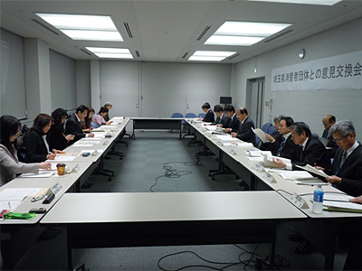

今年度2回目となる、消費者団体と関東農政局との意見交換会が3月10日（月）、さいたま新都心合同庁舎で開催されました。今回は、国がとりまとめた「農林水産業・地域の活力創造プラン」（新たな農業・農村政策（4つの改革））、水田フル活用と米政策見直しについて意見交換されました。
|  |
関東農政局の主催でおこなわれた意見交換会は、埼玉消団連、県生協連、新日本婦人の会、埼玉母親大会連絡会、生協ネットワーク協議会、さいたま市消団連の6団体9人、関東農政局11人が出席しました。
はじめに関東農政局より河津宏志次長が「日本の農業は、就農者の高齢化や耕作放棄地の問題など多くの課題があり、作物のコストの削減のためにも構造改革を進めることが大切です」と挨拶され、（1）「新たな農業・農村政策（4つの改革）について」(2) 「水田フル活用と米政策の見直しについて」各担当から概要の説明をいただきました。担い手の不足と高齢化、耕作放棄地増加に対し、 農地中間管理機構（農地を借り受けて必要な担い手へ貸し付ける）
農地中間管理機構（農地を借り受けて必要な担い手へ貸し付ける） 所得安定対策として交付金の見直し
所得安定対策として交付金の見直し 水田フル活用（米と米以外の作物、産地交付金、米政策の見直し）
水田フル活用（米と米以外の作物、産地交付金、米政策の見直し） 日本型直接支払制度の4つの改革をすすめるとしたものです。
日本型直接支払制度の4つの改革をすすめるとしたものです。
その後の意見交換では、「新農業政策のデメリットはないか」、「これまで生産調整で米価が安定してきたが、今後不安定にならないか」など、消費者から率直な質問が出されました。